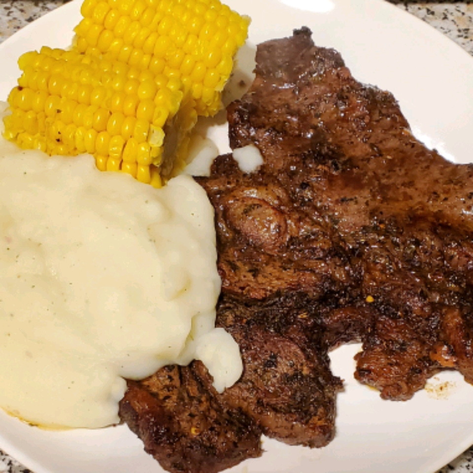

Best Steak Marinade in Existence

Description
This is a family recipe that has been developed only over the last 5 years. In this short time it's made me
famous in our close circle, but until now I've never shared it with anyone.
Ingredients:
- ⅓ cup soy sauce
- ½ cup olive oil
- ⅓ cup fresh lemon juice
- ¼ cup Worcestershire sauce
- 1 ½ tablespoons garlic powder
- 3 tablespoons dried basil
Steps:
- Place the soy sauce, olive oil, lemon juice, Worcestershire sauce, garlic powder, basil, parsley, and pepper
in a blender. Add hot pepper sauce and garlic, if desired. Blend on high speed for 30 seconds until
thoroughly mixed.
- Pour marinade over desired type of meat. Cover, and refrigerate for up to 8 hours. Cook meat as desired.